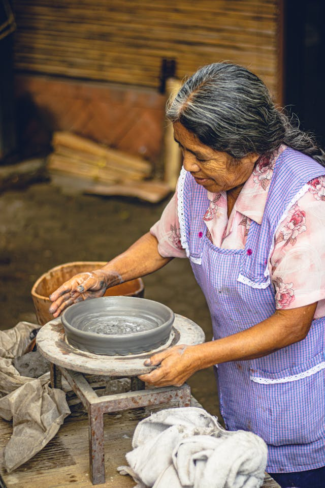
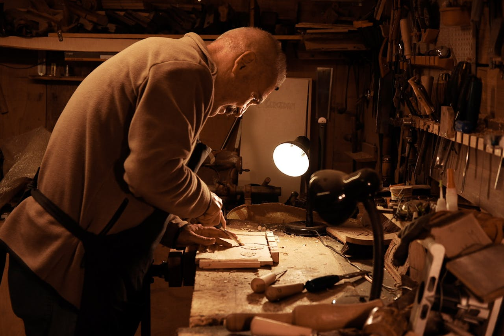
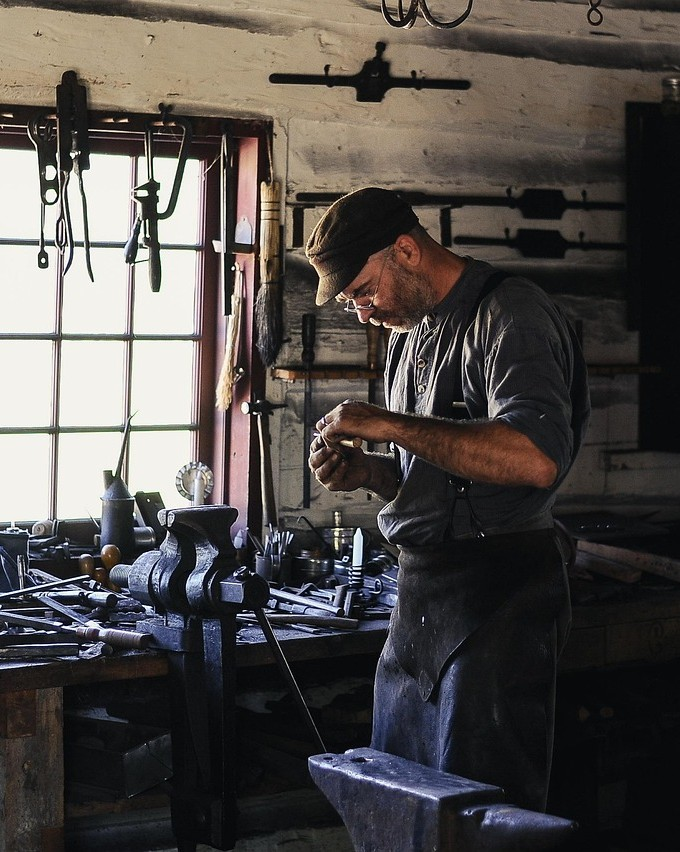
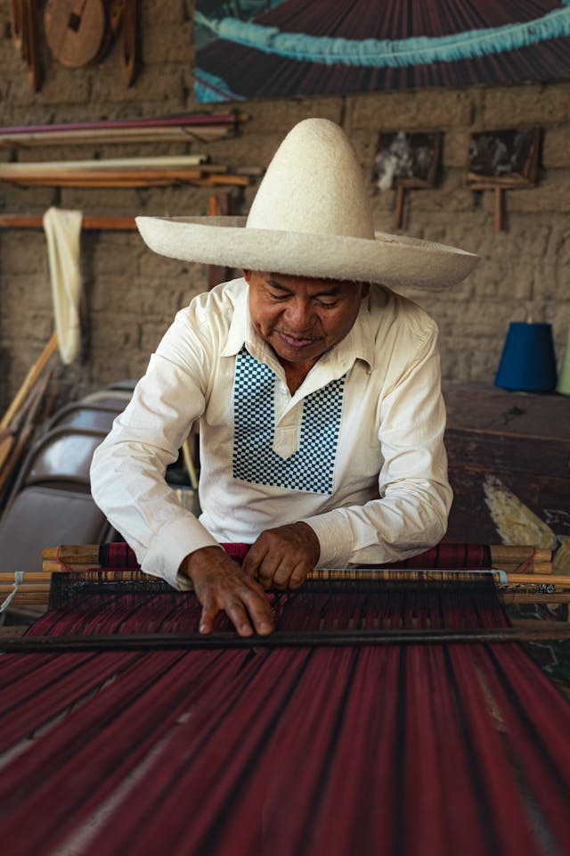
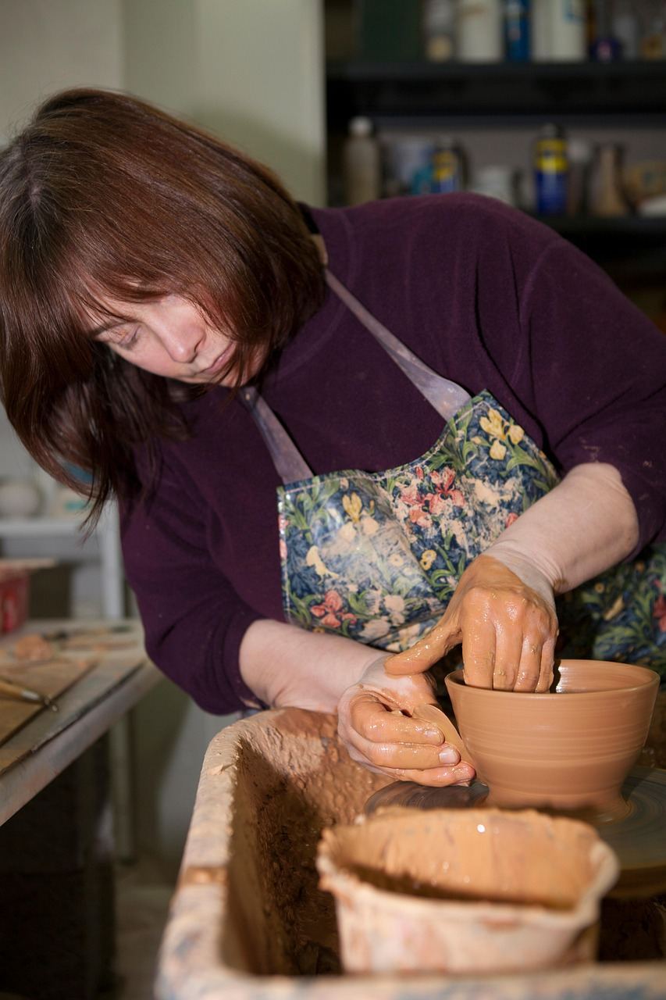
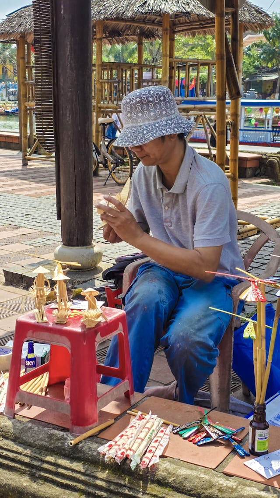

Oradores

Matilda Saeli
Matilda es una maestra alfarera con más de 40 años de trayectoria. En estas jornadas, nos mostrará cómo recupera el uso de tornos manuales del siglo XVIII para crear piezas que combinan la resistencia histórica con la estética rústica de Morella.

Borja Serrano
Borja es un artesano de la madera cuya filosofía se basa en el aprovechamiento de recursos locales. Especializado en madera de olivo y roble, sus charlas exploran cómo las imperfecciones naturales de la veta dictan la forma final de cada escultura.

Carlos Martín
Como uno de los herreros más laureados del país, Carlos destaca por su dominio de la forja a fuego vivo. Sus obras son un referente de la técnica de caldeado, logrando detalles en hierro que parecen desafiar la dureza del metal.

Fernando Gutiérrez
Fernando lleva el sector textil a una nueva dimensión, transformando fibras naturales en obras de arte. Su presentación abordará la creación de murales de gran formato que integran técnicas de telar tradicional con diseños abstractos modernos.

Carmen Toma
Carmen es conocida por romper los moldes de la cerámica convencional. Su trabajo se centra en la aplicación de esmaltes experimentales creados a partir de cenizas volcánicas, logrando texturas y colores imposibles de replicar industrialmente.

Hao Yie
Hao trae desde Oriente la maestría en el trabajo con bambú y paja. Sus creaciones no solo son objetos decorativos, sino estructuras complejas de ingeniería manual que destacan por una precisión milimétrica y una profunda carga simbólica.